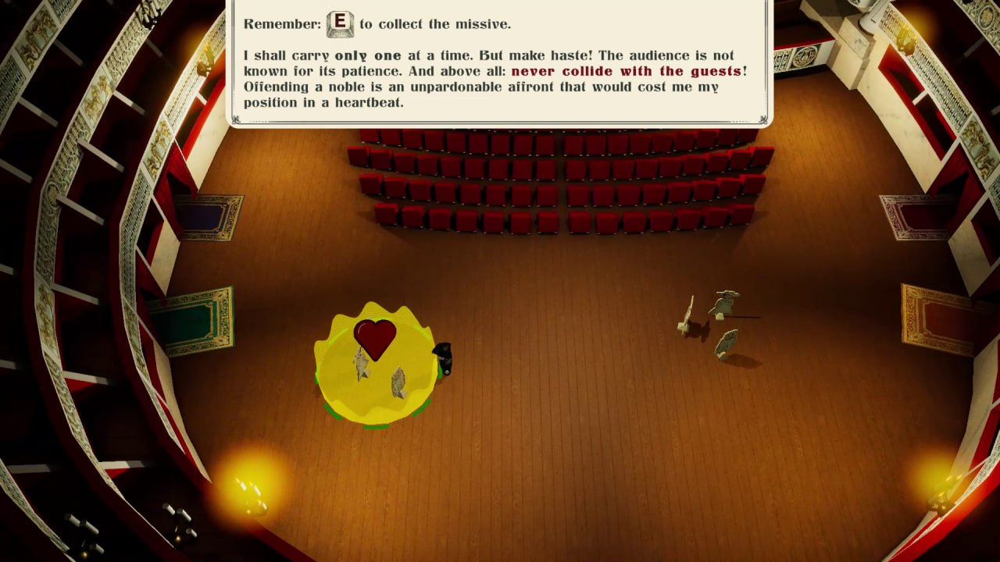
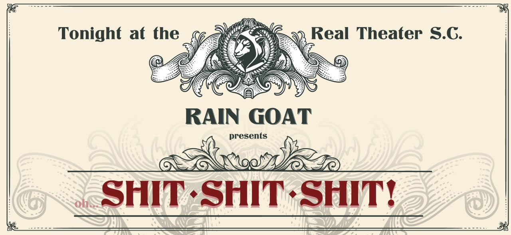
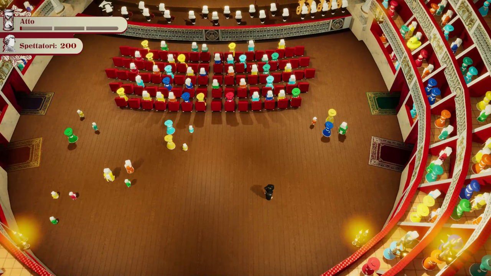
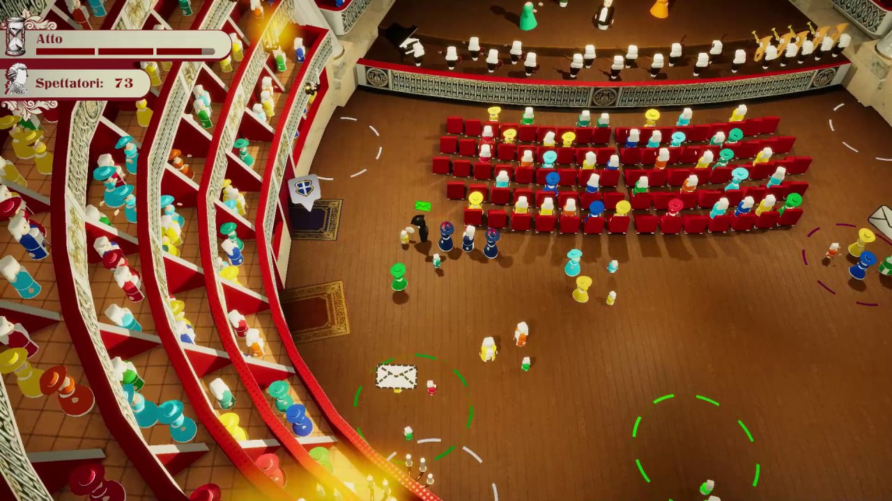
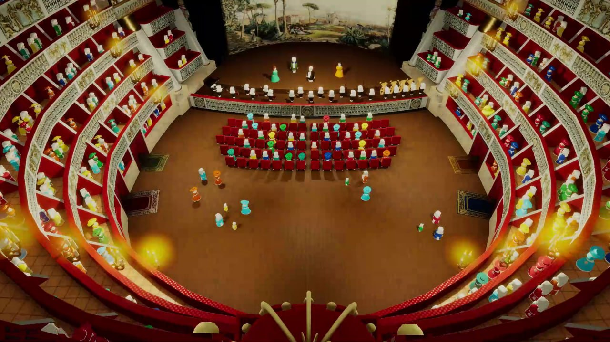
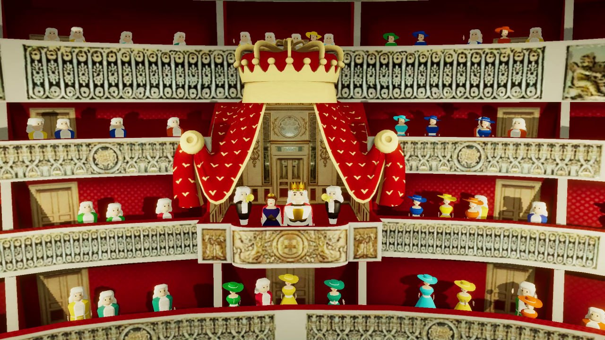
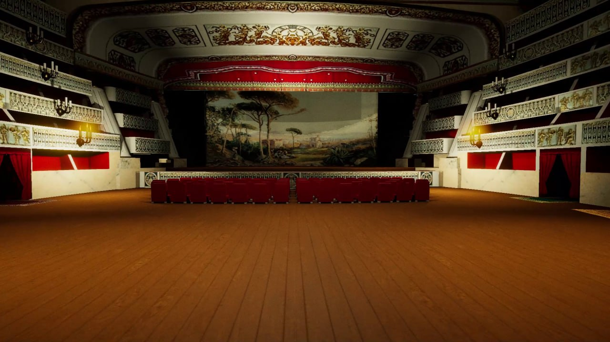
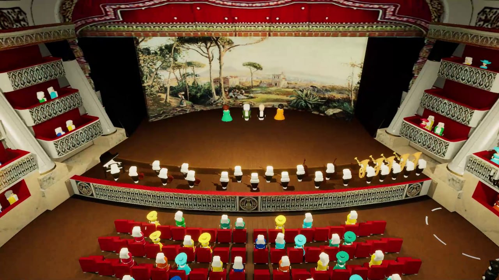

Global Game Jam 2026 — Progetto Completato
Shit! Shit! Shit!
/Introduzione_Al_Gioco
Napoli, 31 Gennaio 1700. Tra le mura dorate del Real Teatro S.C., l'opera è solo un diversivo. Il vero spettacolo si svolge nei corridoi, dietro le tende di velluto, al bagliore fioco di braci morenti.
Tu sei La Maschera. Sei il fantasma nella macchina del teatro più prestigioso del mondo. Sei colui che garantisce che le luci restino accese e i segreti rimangano al buio.
"Nella grande gerarchia di Napoli, tu non esisti. Sei un servitore senza volto, un testimone silenzioso dei peccati dell'élite. Una vita solitaria, ma necessaria. Dopo tutto, se sapessero quanto hai sentito... ti ritroveresti in fondo a un canale prima dell'alba."
Le regole del mestiere: Tieni accese le candele — la cera è spietata, e l'oscurità ancora di più. Guida i nobili alle loro sale private, chiudi le tende e—soprattutto— dimentica i loro volti prima ancora che il chiavistello scatti. Consegna messaggi tra amanti proibiti e politici disperati. Sii rapido, sii preciso: un piano di guerra consegnato a una contessa innamorata è una condanna a morte scritta col tuo stesso sangue.
/Tecnologie_Usate
Unity
Game engine principale. Sviluppo del gameplay, sistema di interazione, fisica e logica di gioco.
C#
Linguaggio di programmazione. Tutto il codice del progetto: sistemi di spawn, messaggi, gestione di luci e ospiti.
Timeline, Cinemachine & Animazioni
Cutscene introduttive e finali, transizioni camera dinamiche e animazioni realizzate interamente in Unity.
/Comparto_Tecnico
Il cuore del progetto risiede in un sistema modulare basato su interfacce e componenti disaccoppiati. Ecco una panoramica delle architetture più significative.
Sistema di Interazione (IInteractable)
MessageSender,
MessageReciver,
Candle,
TakeGuest,
DrobGuest,
None
}
public interface IInteractable {
InteractType InteactableType { get; }
Color MyInteractionColor { get; }
void Interact();
void CompleteInteraction();
}
// IInteractable.cs — Interfaccia base per tutti gli oggetti interagibili.
Ogni elemento di gioco (candele, ospiti, messaggi) implementa IInteractable. Il PlayerController rileva l'oggetto tramite trigger collider, ne identifica il tipo tramite l'enum e attiva l'animazione corrispondente con un delay configurabile via ScriptableObject.
Game Loop a Tre Atti
if (!_isOperaRunning) return;
_elapsedTime += Time.deltaTime;
float progress = Mathf.Clamp01(_elapsedTime / _settings.OperaDurationSeconds);
HandleSpawning(progress);
if (progress >= 1f) EndOpera();
}
private void HandleSpawning(float progress) {
if (progress >= GuestActivationThreshold)
UpdateSpawnTimer(ref _guestTimer, ... , SpawnGuest);
if (progress >= MessageActivationThreshold)
UpdateSpawnTimer(ref _messageTimer, ... , SpawnMessage);
if (progress >= CandleActivationThreshold)
UpdateSpawnTimer(ref _lightTimer, ... , SpawnLight);
}
// GameController.cs — Progressione a soglie (atti) con curve di spawn.
L'opera si divide in tre atti. Ogni atto sblocca una meccanica: prima gli ospiti (Atto I), poi i messaggi segreti (Atto II), infine lo spegnimento delle candele (Atto III). Le frequenze di spawn sono regolate da AnimationCurve per intensificare la difficoltà con l'avanzare del tempo.
Sistema Ospiti con Color Coding
int randomGuestFamilyColor = Random.Range(0, _availableGuestsColor.Count);
var tmpColor = _availableGuestsColor[randomGuestFamilyColor];
if (!_activeGuests.ContainsKey(tmpColor)) {
_activeGuests.Add(tmpColor, new List<FollowerGuest>());
SpawnGuests(tmpColor);
_guestInteractionArea.SetUpInteractionArea(tmpColor, ...);
_availableGuestsColor.RemoveAt(randomGuestFamilyColor);
}
}
// GuestController.cs — Spawn colorato con area di interazione dedicata.
Ogni famiglia di ospiti è identificata da un colore univoco. Il player deve abbinare l'ospite all'uscita del colore corrispondente. Il sistema gestisce pool di GameObject, pathfinding temporaneo tramite Transform targets, e timer di fuga con stato "Hurry Up" visibile tramite icona a schermo.
Cutscene e Animazioni
director.Play();
await UniTask.WaitUntil(() =>
director.state != PlayState.Playing ||
director.time >= director.duration,
cancellationToken: this.GetCancellationTokenOnDestroy());
director.RebindPlayableGraphOutputs();
director.enabled = false;
}
// CutSceneController.cs — Gestione asincrona delle timeline.
Le cutscene sono gestite con Unity Timeline e Cinemachine. L'uso di UniTask permette di attendere il completamento senza bloccare il frame, con supporto alla cancellazione tramite CancellationToken. Il sistema pulisce il grafo della timeline al termine per evitare memory leak.
Configurazione via ScriptableObject
public class PlayerSettings : ScriptableObject {
public float MoveSpeed = 5f;
public float SprintMultiplier = 1.5f;
public float Interaction_GetMessageDelay = 2f;
public float Interaction_TurnOnCandle = 2.5f;
}
// PlayerSettings.cs — Dati configurabili dall'Inspector senza toccare codice.
Ogni sottosistema (Player, Candele, Messaggi, Ospiti, Livello) ha il proprio ScriptableObject per la configurazione. Questo ha permesso di bilanciare il gioco rapidamente durante la jam senza dover ricompilare, e mantiene il codice pulito separando dati e logica.
/Mie_Note_Sul_Progetto
Ho partecipato alla Global Game Jam 2026 con un obiettivo preciso: non imparare qualcosa di nuovo, ma consolidare tutto ciò che ho imparato fino a quel momento.
Mi sono occupato dell'intera parte di sviluppo gameplay, dalle meccaniche di movimento del personaggio al sistema di interazione, dalla gestione delle candele e degli ospiti fino all'implementazione delle animazioni in Unity e delle cutscene con Timeline.
Non è stato un tuffo nel buio alla ricerca di tecnologie sconosciute. È stata una sfida con me stesso: "A che punto sono arrivato? Cosa so fare davvero quando non ho tempo di cercare tutorial o leggere documentazione?"
La risposta è stata chiara. In 48 ore ho messo in piedi un'architettura modulare con interfacce disaccoppiate, sistemi di spawn basati su curve di difficoltà, un sistema di messaging colorato, fisica, animazioni e cutscene. Il tutto lavorando in team, coordinandoci su meccaniche e design.
Ne sono uscito con la consapevolezza che le fondamenta sono solide. So cosa so fare, e so cosa voglio imparare dopo.
— Antonio Troiano
/Screenshot







